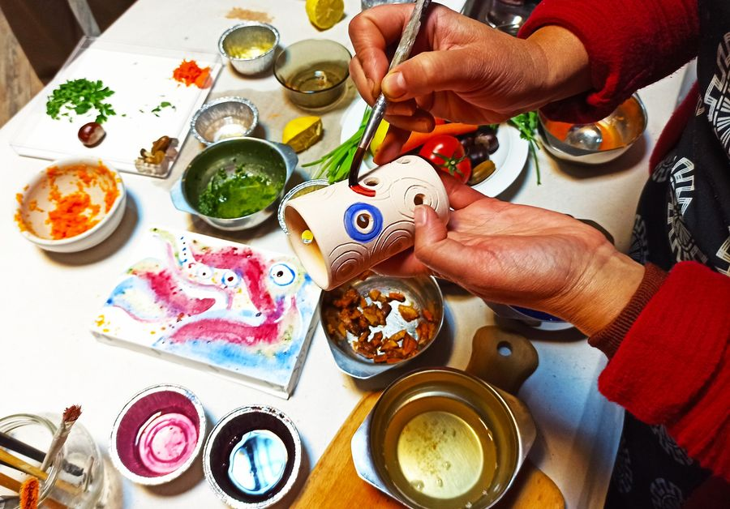

Природата рисува — курс за приготвяне, приложение и съхранение на естествени бои от растения
За първи път курс за приготвяне, приложение и съхранение на естествени бои от растения
с водещ Вяра Границка
доктор по "Изкуствознание и изобразителни изкуства" в НХА, художник и арт-терапевт
Сертификат за преминалите курса.
* 3 дни - 3 различни занимания
22 февруари 2021 - подготовка на сухи бои от природни материали
23 февруари 2021 - подготовка на водни бои чрез термична обработка от природни материали
24 февруари 2021 -техники за приложение и начини за съхранение на бои от природни материали
Може да се включите в едно или всички занимания - изборът е Ваш
След всяко едно занимание ще си тръгвате със самостоятелно приготвени произведения по време на курса.
Ние сме подготовили богата обучителна програма, по време на която ще научите:
* как да приготвяте сами естествени багрила от достъпни природни материали
*за качествата и трайността на естествените багрила
*как да ги използвате в личен творчески процес
Елате и пробвайте как с Вашите ръчно приготовени бои може да рисувате върху керамика, текстил или дърво.
Ако просто искате да придобиете нови и полезни знания, ако цветовете на природата Ви привличат така силно, че имате желание да ги пренесете в ежедневието си, то този курс е точно за Вас.
заяви свето участие днес:
*Доведи приятел - ползвате 10% остъпка
*Записване до 05.02.2021 - 10% отстъпка
Групите са за до 7 участника
Запази своето място с депозит от . Останалата част - плати в деня на курса.
Бъди сред първите изкарали този уникален курс!
10% от средствата са в подкрепа дейността на фондация Ела и Ти See less
Предишни издания
